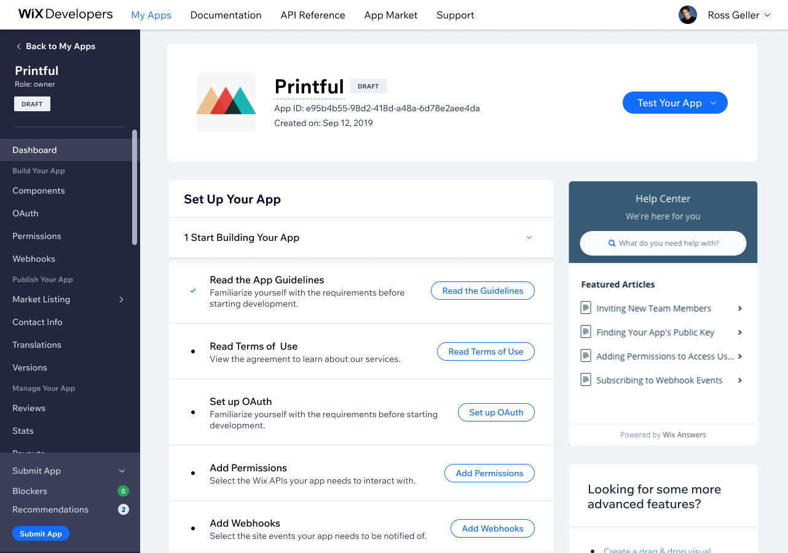
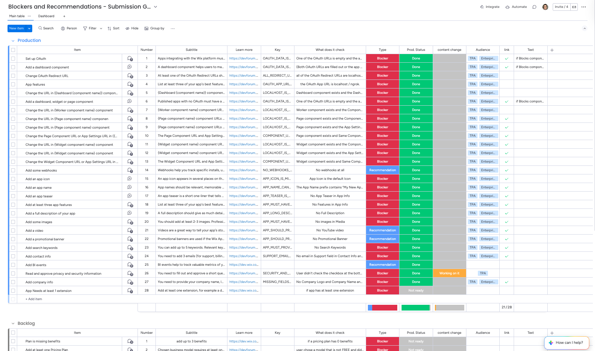
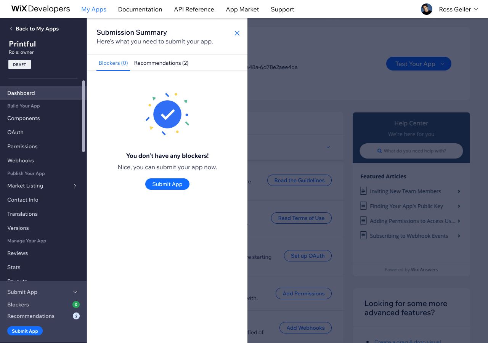
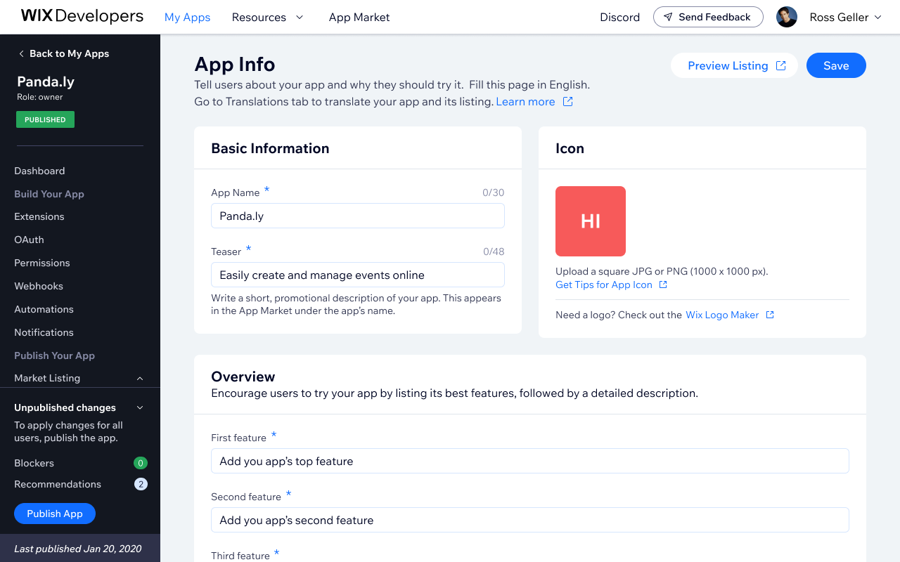
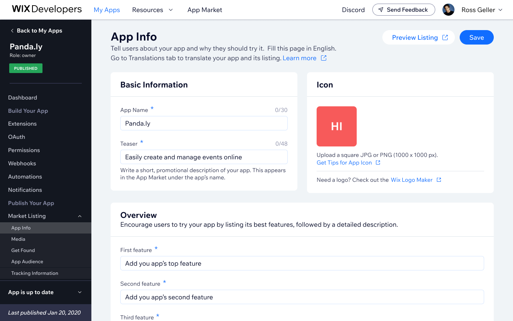
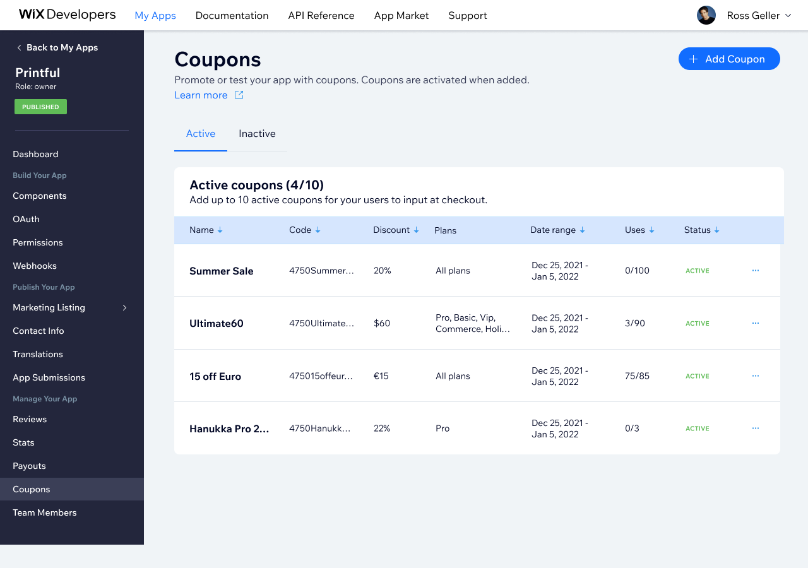
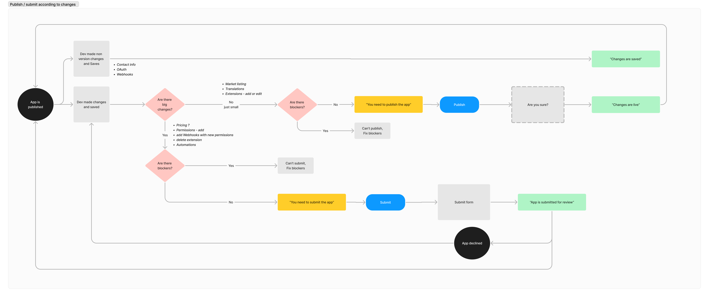
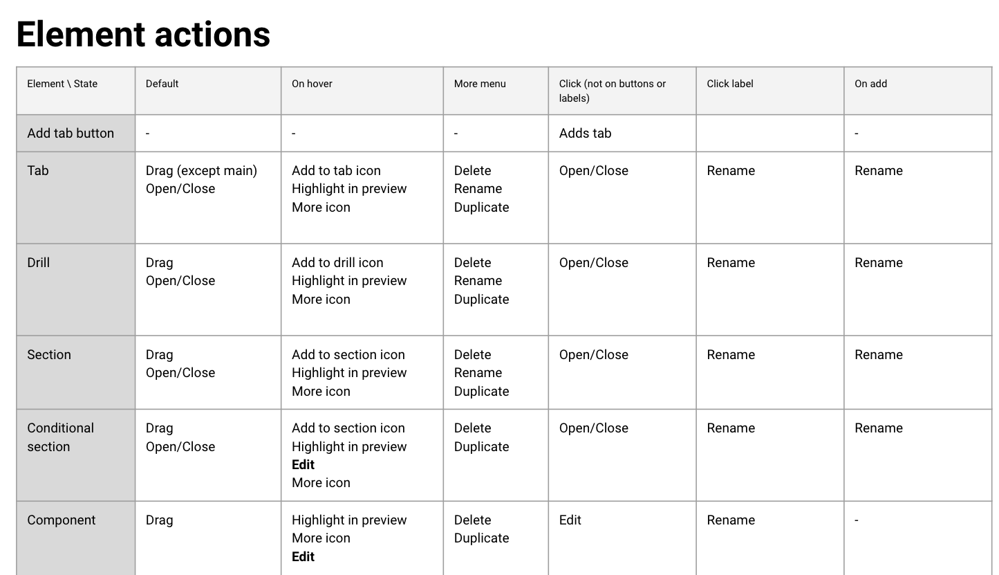
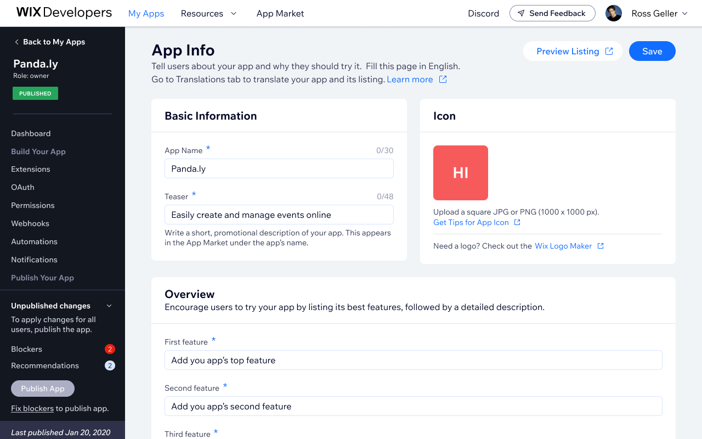

Submit & Publish Widget
Streamlining app submission for third-party developers
Developers submitting apps to the Wix App Market had to navigate to a separate page to check submission requirements, disconnected from their workflow, surfacing too few blockers too late in the process. By the time they reached it, most issues were too late to fix without significant rework, and the Developer Relations team was rejecting a large volume of apps that simply weren't ready. I replaced the fragmented checklist with a contextual sidebar widget that also surfaced recommendations: best practices that weren't hard blockers but could meaningfully improve app quality.
What I Did
- Replaced the fragmented tab-based submission checklist with a contextual sidebar widget
- Designed three adaptive layout states (minimized, widget, expanded) based on developer proximity to submission
- Surfaced real-time blockers and recommendations directly in context
- Extended the system to support auto-publishing for changes that don't require a full review cycle
- Defined the blockers and recommendations themselves - mapping each check to what it validates, who it applies to, and whether it's a hard blocker or a recommendation

Solution
The widget has three states, each designed for a different moment in the developer's journey.
The developer starts from the widget view, which they can minimize at any time.








Iteration: auto-publishing for published apps
After launch, the Developer Relations team flagged a new bottleneck: published apps making minor market listing changes - like updating copy or screenshots - still had to go through a full submission review. To remove that unnecessary friction, I designed an auto-publish path where small changes go live immediately, while significant changes (new permissions, OAuth, extensions) still require a review.
The widget needed to adapt accordingly. Published apps now see an "Update" widget that routes them based on what they changed.






Impact
The auto-publish feature drove 1.2K publishes across 350 apps in 2024. Data on submission rejection rates prior to the widget redesign is pending.
Bottom line
The most interesting design decision was distinguishing blockers from recommendations: hard requirements that prevent submission versus best practices that improve quality without being mandatory. Getting that taxonomy right, and then deciding what each check actually validates, was more consequential than any of the UI decisions.